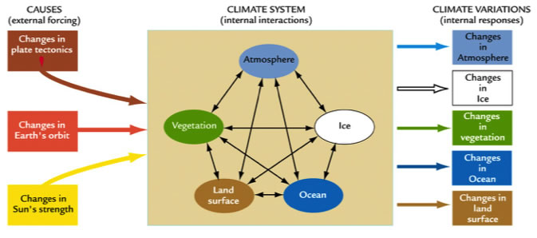
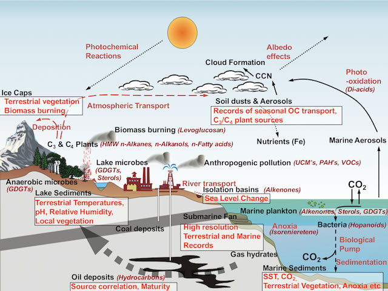

研究内容

地球の気候システムの概念図（Earth's Climate [William Ruddiam著]より）
地球の気候システムは上の図に示すように複数のサブシステムが様々な時間スケールで相互作用し合う複雑な系です。将来の気候変動を予測するにはこの相互作用のからくりを理解する必要があります。しかし地球システムに関する我々の理解レベルは未だにそれほど高くないのが現状です。
では、どうすれば気候システムの全容を理解できるのでしょうか？これを理解するには、現在の観測だけでは不十分です。なぜなら気候システムの応答は、気候状態によって異なることが解ってきたからです。現在の観測からでは現在の気候状態でおこる現象しかわかりません。現在だけ調べてもわかることには限界があるのです。
現在よりも温暖化したり寒冷化したりした時にいったいなにが起こるのか？。これは気候予測における「核心的な問い」です。その答えに迫るには、実際にそのような変動が起こっていた時代を調べる必要があります。ここに古気候研究の真の重要性があります。
この研究室では、この核心的な問いに挑んでいます。そのために、世界各地の古気候記録媒体（アーカイブと呼びます）から様々な時間スケールの過去の気候変動やある特定の時代の気候状態を復元し、得られた気候データを「統合的に解析」することで、気候システムのふるまいと特性を明らかにしていきます。
今取り組んでいる主な課題を以下に挙げます（もちろんそれ以外にも色々やっています）
取り組んでいる課題
1. 温暖化で南極氷床はどのくらい溶け、どのくらい海面が上昇するのか？
2. CO2の増大で気温はどのくらい上昇するのか？
3. エアロゾルはグローバルな気候にどの程度影響を与えているのか？
4. 海の恵みを支える大陸規模な陸海循環システムは存在するか？
5. 気候変動に対する文明の脆弱性
気候の復元方法
古気候記録媒体（アイスコアや堆積物など）中の古気候代理指標（プロキシ）を分析して過去の気候（気温、降水量、水温、塩分濃度、海洋循環、大気CO2濃度、植生、生物生産量、エアロゾル、生物相など）を復元します。
プロキシには様々なものがありますが、当研究室ではバイオマーカーを用いた手法が主体です。生物に起源特異性をもつ様々なバイオマーカーが存在し、環境試料中に保存されていますが、それらの分子組成や同位体比を分析することで様々な環境情報を読み解くことができます。
そのほかにも全国各地の大学や研究機関の研究室との協力体制を整えており、目的に応じた手法を選ぶことができます。

地球表層におけるバイオマーカーの起源と輸送過程
当研究室の分析・実験装置
有機化合物の定量分析に用いる分析機器です。
有機化合物の定量・定性分析に用いる分析機器です。
有機物の元素分析と安定炭素・窒素同位体比を測定するための分析機器です。
有機物の水素・酸素同位体比を測定するための分析機器です。
試料から有機化合物をオートサンプラー方式で自動抽出できる装置です。
試料から有機化合物を自動抽出できる装置です。一度に複数の試料を抽出できます。
有機溶媒を濃縮するための装置です。一度に多数の試料を扱えます。